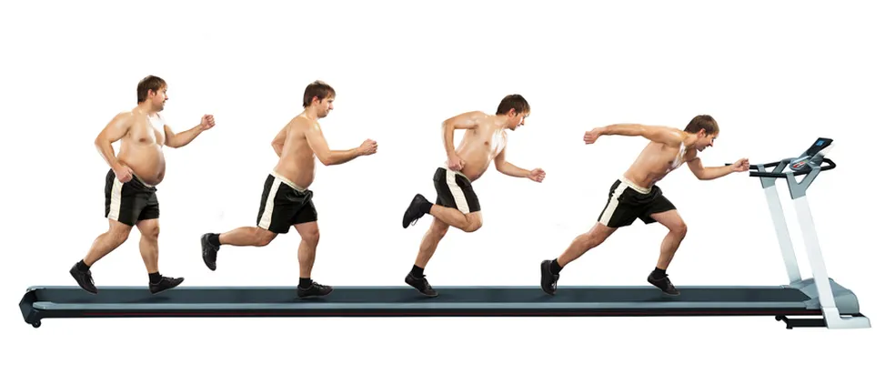
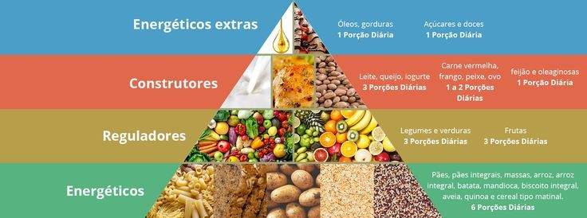

Você tem dificuldade em manter um
equilíbrio na sua dieta diária?

Se a resposta for "Sim!" saiba que você não está sozinho!
Muitas pessoas se sentem presas em uma batalha constante com a balança,
seja para emagrecer ou ganhar peso.
O desejo de alcançar e manter um peso saudável pode parecer uma luta árdua,
mas ao longo desse blog objetivo, você poderá ver que a vitória é possível com
a abordagem certa. Abaixo estão algumas das estratégias mais importantes
e eficazes para uma vida regrada e em equilíbrio alimentar.
Você não precisa de
radicalismo para alcançar o equilíbrio!
Eu sei...você já deve ter ouvido muitas vezes:
- "Você precisa PARAR de consumir açúcar para ser saudável!"
- "Massa?? Você tem que cortar para emagrecer!"
- "Tomando 8 litros de água, quem sabe você consiga começar!"
Mas, calma! Essa não é toda a verdade!
Se você quiser começar e manter uma vida saudável
a começar pela alimetação, você precisa dar seus primeiros
passos de forma realista, condicionada e intencional.
Todos os grupos de alimentos são importantes na sua dieta:
arroz, pão, massa, batata, mandioca; verduras e legumes;
frutas; carnes e ovos; leite, queijo e iogurte. Cada
macronutriente apresenta uma característica e função, e os
carboidratos são a principal fonte de energia do corpo, contendo 4kcal/g.
Por isso, inicialmente, troque a lista anterior por:
- - Encontre um esporte que goste, e se proponha a praticá-lo pelo menos 2 vezes por semana
- - Leve uma garrafa com você por onde for e beba 2 mL de água.
- - Tente parar de consumir alguma bebida enquanto come.
- - Evite o açúcar refinado e o excesso de sal em suas receitas.
- - Escolha as frutas que mais gosta quando for ao mercado, e inclua ovos e fibras às suas compras
- - Prefira levar marmitas ou frutas, ao invés de consumir industrializados quando não estiver em casa.
Procure por alimentos intencionais (como os do parágrafo anterior) que agreguem valor à sua dieta,
e não simplesmente por aqueles que você considera saudáveis em detrimento do consumo de todos os
outros. Abaixo há uma classificação melhor para que você possa sempre estar ciente.

É claro, esse é apenas o princípio de tudo. Para alcançar os resultados que deseja, você precisa
de uma análise personalizada com base em seu padrão de vida e atrelada às suas necessidades e
expectativas pessoais. Isso é possível com um bom especialista que saiba te instruir por um
caminho acertivo sem dispensar a sua boa relação com a comida no decorrer dele.
Além disso, precisa de muita determinação e
prontidão mas, principalmente: direcionamento!